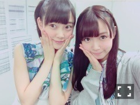
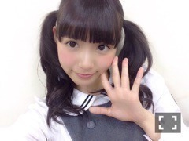
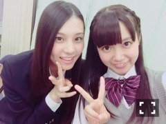

| 2015/11 27 Fri | ひめたん-0o0-その592 |
乃木坂46、NHK紅白歌合戦
初出場が決定しました！
今年の大晦日はテレビの前の乃木坂ちゃんと
一緒に過ごしてもらえたら幸せです。
応援してくださる皆さんのおかげで
グループとしての夢がまた一つ叶いました
本当にありがとうございます！
そうだ、NHKといえば、
お知らせするのが遅くなってしまいました
まだ間に合うかな( ´ ･ω･ ` )
NHK番組表「ステラ」にて
らじらー！サンデーのアシスタントとして
インタビューしていただきました！
本屋さんでチェックしてみてください
ウィークリーなのでお早めに！
NHK繋がりでもうひとつ～♪
日曜の夜はらじらーサンデー！
20時台のオープニングから
聞いていただけたら嬉しいな～と
思います(´,,•ω•,,｀)
2回目のサンクエトワール回、
今回は武道館アンダーライブを
盛り上げるために4人が来てくれます～
今週のメールテーマはこちら！
・サンエトのキャッチコピー
・サンエトで一番〇〇なのは誰？
・私のサンクエトワール
4人への応援メッセージも
お待ちしています
おたよりの宛先はこちら！
そして声優アーツのコーナーには
イヤホンズのお三方が来てくださいます
お楽しみにo(^▽^)o
というか私が楽しみo(^▽^)o

未央ちゃんのこの髪型好き。
わんちゃんみたい......♡
日曜日は握手会ですね！
13thです。来てくれるみなさんは
会場寒いかもしれないので
暖かい格好で来てね(´｡•ω•｡`)
私ね今日はね握手会のために
ショッピングしてきたよ～♡
なーるべーく写メ撮れるよう頑張ります！
日曜日に見たい髪型のリクエストが
もしあれば教えてください。
あ、おでこ出しは
受け付けないよーう( ´ ･ω･ ` )笑

そろそろツインが恋しくなってきた？
でもなーツインももう少し封印かなあ～
この画像で味わってください。
本日ソニレコ更新されました！
新オープニングテーマを作ろう！
ということで話し合ったのですが
じょ～んの新たな才能が明らかに......
チャンネル登録はこちらから。
ソニレコで喋ってる自分の声のトーンか
あまりに素でびっくりした。笑
やっぱね、ツインテールがきっと
私のアイドルスイッチだったんだなって
思うのね～結ぶと気が締まるというかね。
最近色んな現場にリラックスして臨めるの、
それはもちろんいいことなんだけど
ツインを辞めた今、私は
何をスイッチにしたらいいんだろう～

謎の絡み。台湾にて。
～お知らせ～
11/14 EX大衆
11/16 GREEN GORA
11/25 ステラ
11/30 月刊エンタメ
12/2 Men's JOKER WATCH
12/7 トップエール
12/18 乃木坂46物語
12/25 FLASHスペシャル
12/8 BOMBER-E(名古屋テレビ)

ロケ中に公園で万理華ちゃんが
撮ってくれたシリーズ。
そうそう、この前の握手会はね
これのカーディガンなしバージョンで
1部はメガネもしたよ～
最近はお料理してます！
何か作っては写真を撮り、
メンバーやスタッフさんに自慢をし、
出来が良ければメールにも送ってます。
飽き性のひめたん、
今回はいつまで続くことやら......

いおりんお誕生日おめでとう♡
いおりんにもお茶誘ってくださいと
お願いをされました(´｡•ω•｡`)
なんと可愛いのでしょうか～
今年中に行けたらいいなあ
報告待っててねー！
そしてちょっと前
きいちゃんのブログにも
姫とカフェ行きたいと書いてくれてたの
みたよー♡
きいちゃんはね私のことを
ひめちゃんとか、おひめとか呼んでくれるの
嬉しい(´｡•ω•｡`)
きいちゃん～行こうね～！
ひめに質問あるひとー？♡
(＊´・ω・＊)
コメント(958)
2015/11/27 23:48